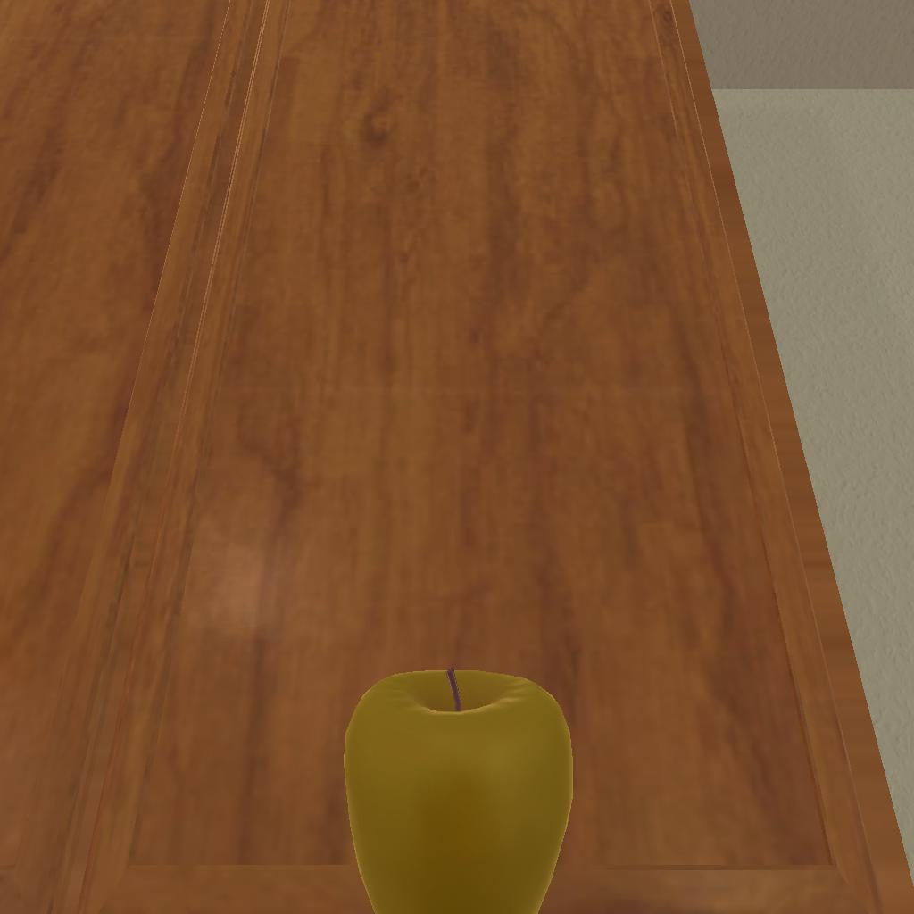

---------------------------------------------------------task: 24---------------------------------------------------------
--------------------------------------------------------------------------------------------------------------------------------------------------------------------
--------------------------------------------------------------------------------------------------------------------------------------------------------------------
Step:--------------------------------------------------------------------------15-------------------------------------------------------------------------------
----------------------------------------
VLM Prompt:
Image1:
Image2:
**Instruction**
1. Analyze the provided images to identify all visible household objects and compare the difference between images (e.h. whether the object is opened or not and taken on hand or not), focusing on those relevant to the task description "heat some tomato and put it in fridge."
2. Use the analysis of images and the task hint "The agent must find an object of the desired type, pick it up, go to a microwave, heat the object with the microwave, then find the correct location to place it, and put it down there. The agent does not need to use the microwave button or open the microwave to heat the object, and the agent just needs to do action that is "heat the object with the microwave"." to answer the question: what is the most reasonable action in the choices for the task description "heat some tomato and put it in fridge"?
3. Decide and write the answer using the template: The answer is: (i): , where i is the real number. If there is no desired object in images, search every place based on **Initial Observation** to find the object. And if no one is exactly correct, choose a similar answer.
**Initial Observation**
You are in the middle of a room. Looking quickly around you, you can see cabinet (1-14), countertop (1-2), microwave (1), drawer (1-5), sink (1), sinkbasin (1), coffeemachine (1), stoveburner (1-4), toaster (1), fridge (1), diningtable (1), garbagecan (1), safe (1)
**Answer Choices**
(1): go to cabinet 3
(2): go to countertop 1
(3): go to cabinet 4
(4): go to cabinet 5
(5): go to microwave 1
(6): go to cabinet 6
(7): go to drawer 1
(8): go to drawer 2
(9): go to drawer 3
(10): go to cabinet 7
(11): go to cabinet 8
(12): go to sink 1
(13): go to sinkbasin 1
(14): go to coffeemachine 1
(15): go to cabinet 9
(16): go to cabinet 10
(17): go to drawer 4
(18): go to cabinet 11
(19): go to stoveburner 1
(20): go to stoveburner 2
(21): go to stoveburner 3
(22): go to stoveburner 4
(23): go to cabinet 12
(24): go to toaster 1
(25): go to drawer 5
(26): go to countertop 2
(27): go to cabinet 13
(28): go to cabinet 14
(29): go to diningtable 1
(30): go to garbagecan 1
(31): go to safe 1
(32): open cabinet 2
(33): close cabinet 2
(34): put apple 1 in/on cabinet 2
(35): examine apple 1
(36): examine cabinet 2
**Answer**
Let's think step by step by following the instructions.
----------------------------------------
----------------------------------------
Original Response:
Image Analysis:
- In Image 1, we can see what appears to be a kitchen shelf or cabinet with a brownish ball that could represent a tomato, and a white vase on the top shelf.
- In Image 2, we see a green apple on a wooden surface, which could be a countertop or dining table.
Comparing the differences, none of the objects seem to be opened, taken in hand, or relevant to heating a tomato and putting it in a fridge.
Task Description Analysis:
According to the task description, the agent needs to find a tomato, pick it up, heat it in a microwave, and then put it in a fridge. Since none of the images show a microwave or a fridge, we will have to rely on the initial observation to deduce the next action.
Initial Observation:
Based on the initial observation, the agent is in a room with various kitchen objects and appliances, including a microwave and a fridge.
Given that we need to heat a tomato, the most logical step would be to first find a tomato. The initial observation does not explicitly mention where tomatoes are kept, but they are most likely to be found in a cabinet or a fridge. Since the task does not mention that the agent already has a tomato, we can assume the agent needs to find one.
Answer Choices Analysis:
- Choices (1) to (31) involve going to different cabinets, drawers, appliances, and other locations in the room.
- Choice (32) and (33) involve opening and closing cabinet 2, which may or may not contain tomatoes.
- Choices (34) to (36) involve actions with an apple and examining the cabinet, which are not relevant to the task.
Based on the analysis, the most reasonable action to take for the task "heat some tomato and put it in fridge" would be to first find a tomato. Since the images do not show where tomatoes are kept, and it is common for tomatoes to be stored in cabinets or refrigerators, we would need to search these locations.
The answer is: (1): go to cabinet 3. This is a reasonable starting point to search for a tomato, as any cabinet number is equally likely to contain tomatoes without further information. If the tomato is not found in cabinet 3, the agent can then proceed to check other cabinets or the fridge as mentioned in the initial observation.
----------------------------------------
----------------------------------------
>>> Refine Original VLM Response and Get Pure Action: go to cabinet 3
----------------------------------------
-----------------------------------------------------------------
Running time: 17.752171754837036 seconds
Total Money: 12.544940000000002
-----------------------------------------------------------------
-----------------------------------------------------------------
Text Observation:You arrive at loc 2. The cabinet 3 is closed.
-----------------------------------------------------------------
UNSUCCEED